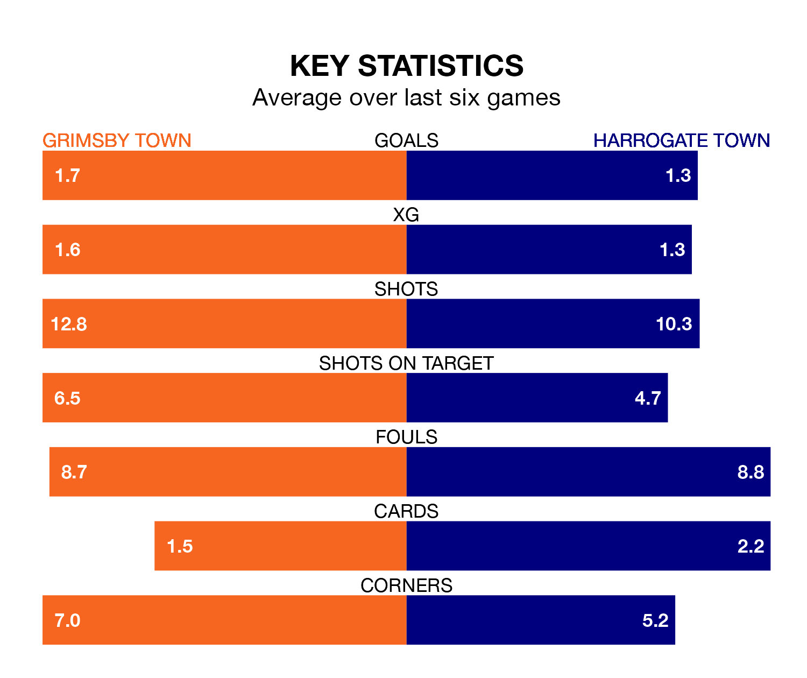

Grimsby Town face Harrogate Town on Saturday seeking to protect their long unbeaten run in EFL League Two.
The Mariners are unbeaten in six, with two wins and four draws, ahead of the 3pm kick-off.
They face a Harrogate team who have won two and drawn two over the same number of games.
With 23 goals in 21 games so far this season, Harrogate are the league's third-lowest scorers with 1.1 goals per game. But they are conceding fewer than average too, letting in 28 goals at a rate of 1.3 per game.
Grimsby are also below average scorers, with 1.4 goals per game, compared to a league average of 1.5. They have conceded 1.5 goals per game.
Grimsby Town are 18th in the table after 22 games, of which they have won five and drawn nine, earning 24 points.
Harrogate Town are three places ahead of the Mariners in 15th, with eight wins and three draws putting them on 27 points.
In the last three years, Grimsby and Harrogate have played each other on three occasions. Harrogate won two of them and they drew once.
Their last meeting was on February 21, when they played out a 0-0 draw.
Grimsby's last match was on December 16, a 1-1 draw against Newport County, with Danny Rose getting the goal for the Mariners.
Harrogate beat Notts County 3-1 last time out, also on December 16, with Abraham Odoh, George Thomson and Matty Daly on the scoresheet.
Updated: 12:43, 20/12/23